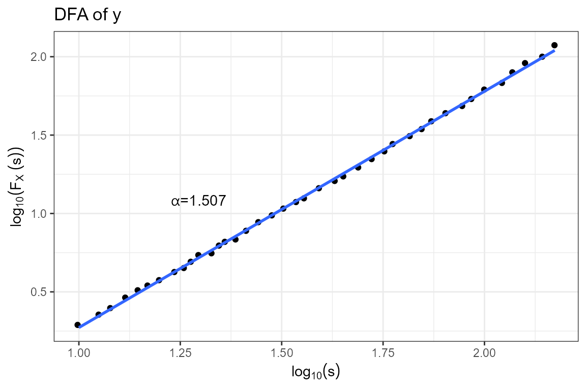
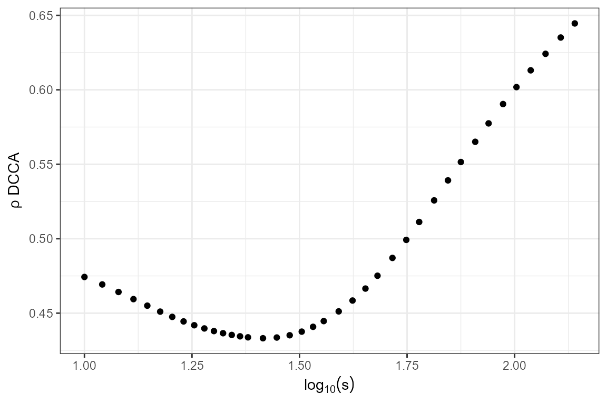
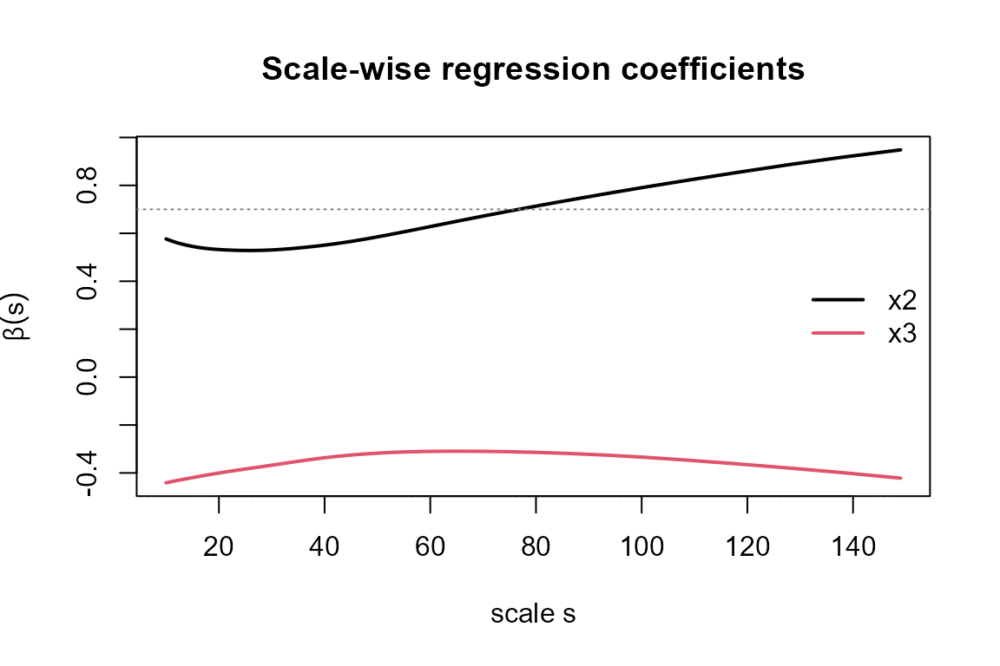
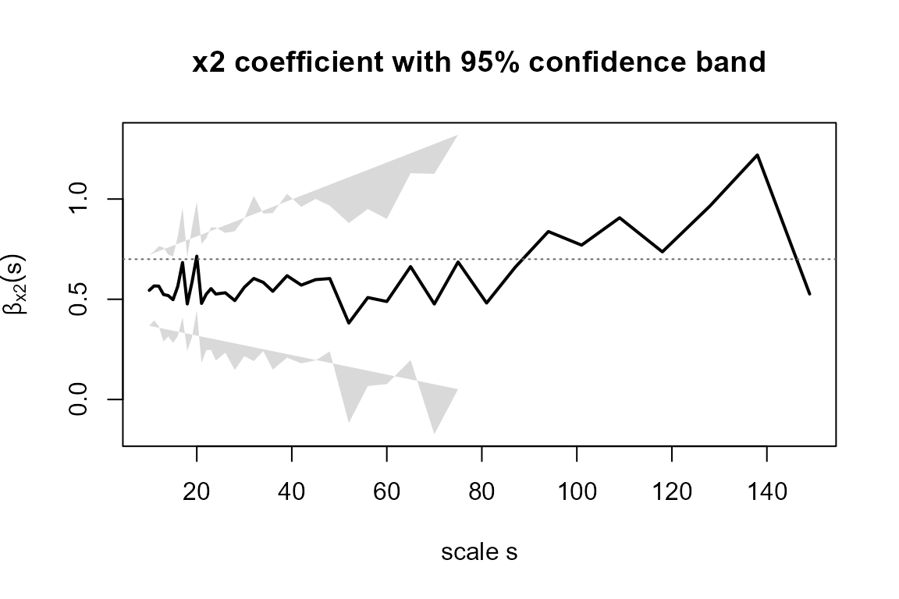
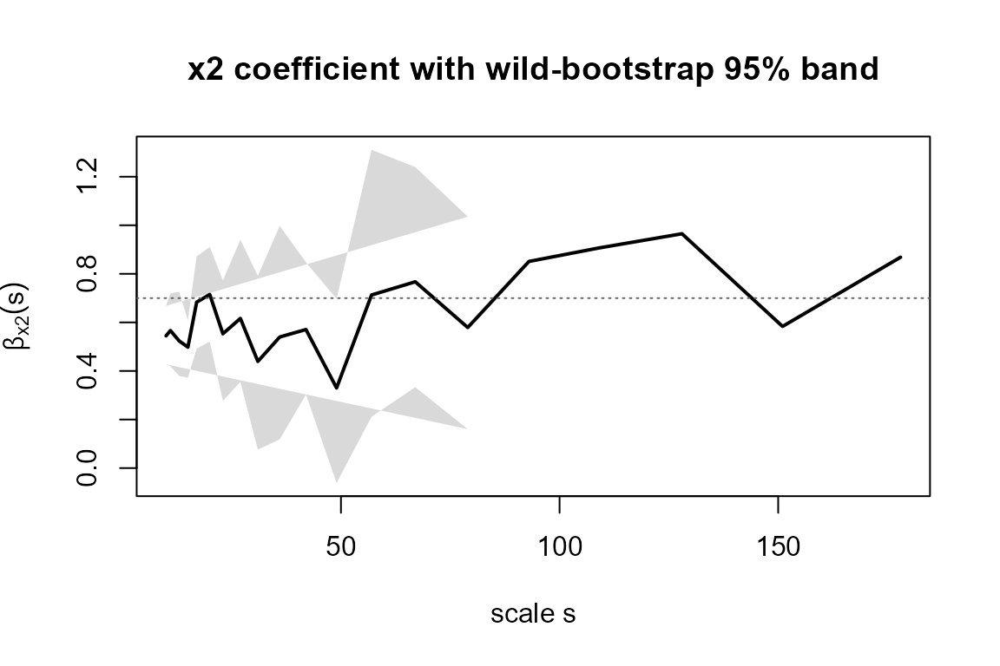
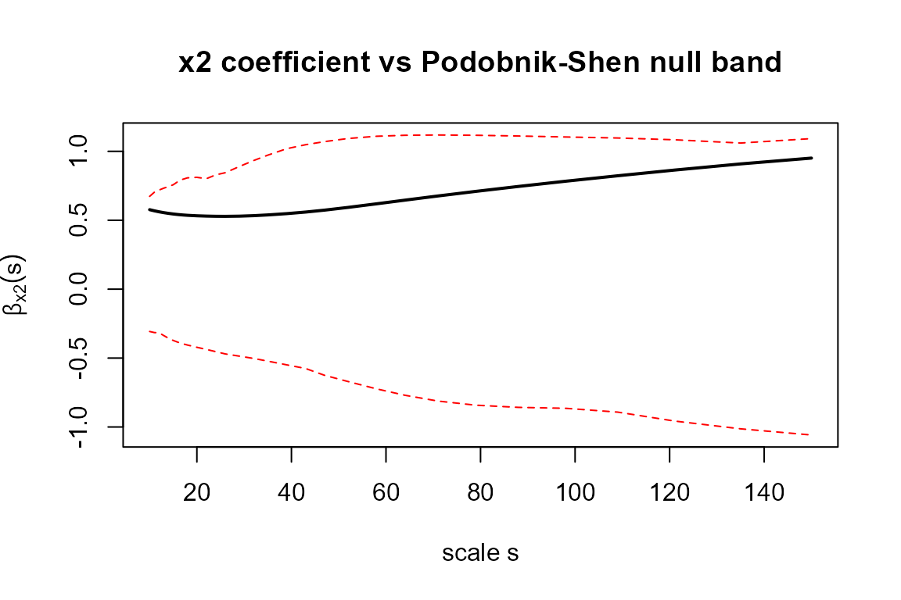

Detrended fluctuation analysis and related methods
Ikaro Daniel de Carvalho Barreto, Luiz Henrique Dore
Source:vignettes/DFATools.Rmd
DFATools.RmdOverview
Detrended Fluctuation Analysis (DFA) and its relatives are a family
of methods for measuring long-range correlations and cross-correlations
in nonstationary time series, where classical
autocorrelation and ordinary regression are biased by trends.
DFATools collects the most useful members of this family
under a common, consistent interface:
| Concern | Function(s) |
|---|---|
| Scaling of a single series |
dfa(), plotdfa()
|
| Cross-correlation of two series |
rhodcca(), plotrdcca()
|
| Partial cross-correlation | rhodpcca() |
| Multiple cross-correlation | dmc2() |
| Regression at each scale |
betadfa(), sbdfa(),
fracreg()
|
| Scale-wise effect sizes | effsizeDFA() |
| Coefficient inference, diagnostics & robust SEs |
fracreg(), fracreg.diag(),
fracreg.WB()
|
| Significance tests |
fracreg.PStest(), fracreg.Ktest(),
fracreg.IUTest()
|
Several of the regression-oriented tools — the scale-dependent standardized coefficients, the scale-wise effect size and the intersection-union test — were introduced by Barreto et al. (2021), whose framework this package implements.
Data convention and common arguments
Except for dfa() (which takes a single numeric vector),
the functions expect a matrix or data frame whose first column
is the response
and whose remaining columns are the covariates
.
They share four arguments:
-
dpo— order of the polynomial used for detrending (1 = linear); -
int— ifTRUE, the series are integrated (cumulatively summed) first; -
np— number of scales (box sizes) at which the statistics are evaluated; -
overlap— ifTRUE, sliding (overlapping) boxes are used.
Throughout the vignette we use a simulated system in which a response
y depends on two random-walk drivers, x2
(positive) and x3 (negative):
Detrended fluctuation analysis
DFA (Peng et al. 1994) quantifies the scaling of fluctuations in a series. The series is first integrated into the profile , which is split into boxes of size ; within each box a polynomial trend is removed and the variance of the residuals is taken. Averaging over boxes gives the fluctuation function , which for a self-similar series follows a power law where the exponent generalises the Hurst exponent: marks an uncorrelated series, persistence (long-range positive correlations) and anti-persistence.
fy <- dfa(dat$y, np = 40)
head(fy)
#> # A tibble: 6 × 2
#> s F
#> <int> <dbl>
#> 1 10 3.81
#> 2 11 5.01
#> 3 12 6.43
#> 4 13 8.09
#> 5 14 10.0
#> 6 15 12.2
# the DFA exponent is the slope of log F(s) against log s
alpha <- coef(lm(log10(fy$F) ~ log10(fy$s)))[[2]]
round(alpha, 3)
#> [1] 3.014plotdfa() draws the log–log fluctuation plot with the
fitted exponent:
plotdfa(fy, main = "DFA of y")
Cross-correlation: the rho-DCCA coefficient
Detrended Cross-Correlation Analysis (DCCA) (Podobnik and Stanley 2008) replaces the box
variance by the detrended covariance
between two integrated profiles. On its own
is unbounded, so Zebende (2011) normalised
it into the DCCA cross-correlation coefficient
a scale-by-scale analogue of Pearson’s
correlation that is robust to trends. rhodcca() returns one
column per pair of series:
rc <- rhodcca(dat, np = 40)
head(rc)
#> # A tibble: 6 × 4
#> s DCCA12 DCCA13 DCCA23
#> <int> <dbl> <dbl> <dbl>
#> 1 10 0.474 -0.372 -0.0361
#> 2 11 0.469 -0.370 -0.0353
#> 3 12 0.464 -0.368 -0.0332
#> 4 13 0.459 -0.367 -0.0305
#> 5 14 0.455 -0.364 -0.0278
#> 6 15 0.451 -0.362 -0.0252
plotrdcca(rc, var = "12") # pair y (1) vs x2 (2)
The coefficient is strongly positive for the
y–x2 pair, as built into the simulation.
Partial cross-correlation: rho-DPCCA
When several series interact, a direct may be inflated by shared drivers. Detrended Partial-Cross-Correlation Analysis (Yuan et al. 2015) removes the linear influence of the remaining series by inverting the matrix at each scale, giving the partial coefficient :
Multiple cross-correlation: DMC
The Detrended Multiple Cross-Correlation Coefficient (Zebende and Silva Filho 2018) generalises the multiple-correlation coefficient () to scales. Writing for the matrix of among the covariates and for their coefficients with the response, measuring how much of the response is jointly explained by the covariates at each scale (a recent statistical test is given by Wang, Xu, and Fan (2021)):
Detrended fractal regression
Kristoufek (2015) turned the detrended
(co)variances into a full regression framework.
Collecting the detrended covariance matrix
,
the scale-wise regression coefficients are
an unstandardised effect of each
covariate on the response at scale
that, unlike OLS, can vary across scales. The multivariate case
(
covariates, detrended multiple linear regression) is due to Shen (2015). betadfa() returns
these coefficients and sbdfa() their
standardised counterparts (computed from the
matrices), which Barreto et al. (2021)
proposed as a scale-wise measure of relative importance:
b <- betadfa(dat, np = 40)
head(b)
#> # A tibble: 6 × 3
#> s x2 x3
#> <int> <dbl> <dbl>
#> 1 10 0.577 -0.441
#> 2 11 0.568 -0.436
#> 3 12 0.561 -0.432
#> 4 13 0.555 -0.428
#> 5 14 0.550 -0.424
#> 6 15 0.545 -0.420
matplot(b$s, b[, c("x2", "x3")], type = "l", lty = 1, lwd = 2,
xlab = "scale s", ylab = expression(beta(s)),
main = "Scale-wise regression coefficients")
abline(h = c(0.7, -0.5), lty = 3, col = "grey50")
legend("right", c("x2", "x3"), col = 1:2, lty = 1, lwd = 2, bty = "n")
The single-path estimates sit near the true coefficients and , but a single realisation cannot establish unbiasedness — averaging over scales does not shrink the sampling error of one path. A small Monte Carlo experiment with stationary predictors makes the recovery rigorous, reporting the mean and the Monte Carlo standard error (MCSE) over replications:
set.seed(1)
n <- 1500; nsim <- 100
b <- c(x2 = 0.7, x3 = -0.5)
est <- t(replicate(nsim, {
x2 <- rnorm(n); x3 <- rnorm(n)
d <- data.frame(y = b["x2"] * x2 + b["x3"] * x3 + rnorm(n, sd = 0.5),
x2 = x2, x3 = x3)
fit <- fracreg(d, dpo = 1, int = TRUE, np = 30, overlap = FALSE)
ce <- which(fit$s >= 20 & fit$s <= n / 10) # central scales
c(mean(fit$BDFA[1, 1, ce]), mean(fit$BDFA[2, 1, ce]))
}))
round(rbind(true = b,
mean = colMeans(est),
mcse = apply(est, 2, sd) / sqrt(nsim)), 3)
#> x2 x3
#> true 0.700 -0.500
#> mean 0.703 -0.502
#> mcse 0.004 0.003Both coefficients are recovered to within a couple of Monte Carlo standard errors of their true values.
fracreg() is the all-in-one workhorse: a single call
returns the scale vector, detrended (partial) correlations, raw and
standardised
,
the coefficient of determination, the DMC, confidence limits and
-values:
fr <- fracreg(dat, dpo = 1, int = TRUE, np = 40)
names(fr)
#> [1] "s" "F" "DCCA" "DPCCA"
#> [5] "BDFA" "BSDFA" "UDFA" "VDFA"
#> [9] "VDFA2" "DMC2" "R2DFA" "UCIB"
#> [13] "LCIB" "p.value" "TC" "VIF"
#> [17] "kappa" "R2adj" "alpha" "H_resid"
#> [21] "kappa_factor" "variance_method" "df_eff" "Ts"Scale-wise effect sizes
effsizeDFA() reports the scale-wise effect size
introduced by Barreto et al. (2021) —
Cohen’s
(Cohen 1988) evaluated at each scale,
— turning the regression into a scale-resolved importance measure:
ef <- effsizeDFA(dat, np = 40)
head(ef)
#> # A tibble: 6 × 6
#> s R2 R2_x2 R2_x3 f2_x2 f2_x3
#> <int> <dbl> <dbl> <dbl> <dbl> <dbl>
#> 1 10 0.123 0.0191 0.0506 0.119 0.0826
#> 2 11 0.119 0.0188 0.0485 0.114 0.0804
#> 3 12 0.116 0.0184 0.0464 0.110 0.0784
#> 4 13 0.113 0.0181 0.0446 0.106 0.0766
#> 5 14 0.109 0.0176 0.0429 0.103 0.0748
#> 6 15 0.107 0.0172 0.0414 0.100 0.0731Inference: confidence intervals, diagnostics and robust standard errors
The point estimates above are only half the story.
fracreg() also quantifies the uncertainty
of every scale-wise coefficient: the returned arrays carry the variance
(VDFA), the 95% confidence limits (LCIB,
UCIB) and two-sided p.values, alongside
collinearity diagnostics. A coefficient is indexed as covariate
at scale
— e.g. fr$BDFA[j, 1, k] and
fr$UCIB[j, 1, k].
The coefficient variance
By default (variance = "inv_corrected") the variance is
built from the full inverse of the predictors’
detrended covariance matrix, normalised by the box count
minus the number of predictors
,
and scaled by a memory-correction factor,
The inverse is the matrix that produces
(Tilfani et al. 2022); the factor depends
on the DFA exponent
of the regression error (estimated from the OLS residual) and restores
nominal coverage under polynomial detrending.
variance = "inv" drops the factor, and the legacy
variance = "marginal" form
ignores the off-diagonal structure and under-covers when the
covariates are correlated.
fr <- fracreg(dat, dpo = 1, int = TRUE, np = 40) # variance = "inv_corrected" (default)
b <- fr$BDFA[1, 1, ] # x2 coefficient
lo <- fr$LCIB[1, 1, ]; hi <- fr$UCIB[1, 1, ]
plot(fr$s, b, type = "n", ylim = range(lo, hi, na.rm = TRUE),
xlab = "scale s", ylab = expression(beta[x2](s)),
main = "x2 coefficient with 95% confidence band")
polygon(c(fr$s, rev(fr$s)), c(lo, rev(hi)), col = "grey85", border = NA)
lines(fr$s, b, lwd = 2)
abline(h = 0.7, lty = 3, col = "grey40")
Collinearity diagnostics
Because the variance now depends on the conditioning of
,
fracreg() reports scale-wise diagnostics: the variance
inflation factors VIF, the condition number
kappa of the covariates’ scale-wise correlation matrix, and
the adjusted coefficient of determination R2adj (Tilfani et al. 2022).
fracreg.diag() returns them as a tidy table:
head(fracreg.diag(dat, dpo = 1, int = TRUE, np = 40))
#> # A tibble: 6 × 5
#> s VIF_x2 VIF_x3 kappa R2adj
#> <int> <dbl> <dbl> <dbl> <dbl>
#> 1 10 1.00 1.00 1.07 0.340
#> 2 11 1.00 1.00 1.07 0.333
#> 3 12 1.00 1.00 1.07 0.327
#> 4 13 1.00 1.00 1.06 0.321
#> 5 14 1.00 1.00 1.06 0.315
#> 6 15 1.00 1.00 1.05 0.309Here the two drivers are independent, so the VIFs sit at
1 and kappa near 1; a VIF rising well above 1
at some scales would flag scale-localised collinearity that inflates the
coefficient variance — a warning with no analogue in ordinary
regression.
Robust standard errors: HC and the wild bootstrap
The analytic variance assumes homoscedastic, independent detrended boxes. When that is in doubt, two robustifications are available, both built on the per-box detrended moments (so the DFA itself is never recomputed):
-
variance = "hc"— a heteroscedasticity-consistent (sandwich) variance, with the per-box outer product of the moment scores. The coefficients are unchanged — only their variance is. Useoverlap = FALSE. -
fracreg.WB()— a wild bootstrap of the coefficients that resamples those scores and returns percentile confidence limits and -values. The defaultweights = "dependent"is the dependent wild bootstrap of Shao (2010) (robust to dependence across boxes);"rademacher"and"mammen"(Mammen 1993) give the i.i.d. version, which reproduces the HC variance exactly.
fr_hc <- fracreg(dat, dpo = 1, int = TRUE, np = 40, overlap = FALSE, variance = "hc")
# HC standard error of the x2 coefficient (first few scales)
round(sqrt(fr_hc$VDFA[1, 1, ])[1:6], 3)
#> [1] 0.062 0.071 0.083 0.099 0.078 0.063
wb <- fracreg.WB(dat, B = 199, weights = "dependent", np = 20)
plot(wb$s, wb$beta_x2, type = "n", ylim = range(wb$lower_x2, wb$upper_x2, na.rm = TRUE),
xlab = "scale s", ylab = expression(beta[x2](s)),
main = "x2 coefficient with wild-bootstrap 95% band")
polygon(c(wb$s, rev(wb$s)), c(wb$lower_x2, rev(wb$upper_x2)),
col = "grey85", border = NA)
lines(wb$s, wb$beta_x2, lwd = 2)
abline(h = 0.7, lty = 3, col = "grey40")
Both the analytic and the bootstrap bands keep x2
clearly above zero at every scale, confirming a robust, scale-consistent
positive effect.
Significance tests
DFATools ships surrogate-based tests for the scale-wise
coefficients, built on phase-randomised surrogates of the series:
-
fracreg.PStest()— Podobnik–Shen test of (no detrended effect) (Podobnik et al. 2011; Shen 2015); -
fracreg.Ktest()— Kristoufek test of (the scale effect equals the global OLS one) (Kristoufek 2015); -
fracreg.IUTest()— the intersection–union test of Barreto et al. (2021) (following the intersection–union principle, e.g. Van Deun et al. (2009)), which combines the two so as to reject only when a covariate has a direct, scale-dependent effect that OLS would miss.
Each returns the estimated
together with the lower/upper critical bounds of the test, so a
coefficient is significant at a scale when it falls outside the band. We
use a small number of surrogates here for speed; raise B in
practice.
ps <- fracreg.PStest(dat, B = 30, np = 30)
head(ps)
#> # A tibble: 6 × 7
#> bet1 bet2 slci1 slci2 suci1 suci2 s
#> <dbl> <dbl> <dbl> <dbl> <dbl> <dbl> <int>
#> 1 0.577 -0.441 -0.307 -0.418 0.673 0.272 10
#> 2 0.568 -0.436 -0.315 -0.446 0.703 0.307 11
#> 3 0.561 -0.432 -0.316 -0.468 0.719 0.325 12
#> 4 0.555 -0.428 -0.337 -0.486 0.733 0.348 13
#> 5 0.550 -0.424 -0.356 -0.500 0.744 0.387 14
#> 6 0.545 -0.420 -0.372 -0.511 0.758 0.420 15
plot(ps$s, ps$bet1, type = "l", lwd = 2,
ylim = range(ps[, c("bet1", "slci1", "suci1")]),
xlab = "scale s", ylab = expression(beta[x2](s)),
main = "x2 coefficient vs Podobnik-Shen null band")
lines(ps$s, ps$slci1, lty = 2, col = "red")
lines(ps$s, ps$suci1, lty = 2, col = "red")
The x2 coefficient lies well above the null band at all
scales — a clear, scale-consistent effect.
Practical notes
- Choose
npand the implied range of box sizes with care: very small boxes are noisy and very large boxes leave few windows. The defaults span box sizes from 10 to one fifth of the series length. - Use
int = TRUEfor noise-like (stationary) inputs andint = FALSEwhen the series are already integrated (random-walk-like). - For confidence intervals, keep the default
variance = "inv_corrected"; switch to the wild bootstrap (fracreg.WB()) when you suspect heteroscedasticity or dependence between boxes, and read theVIF/kappadiagnostics to spot scales where collinearity inflates the variance. -
fracreg()andfracreg.WB()acceptabs = TRUEto build the cross-correlation step from the absolute detrended covariance, which is more robust to outliers. - The surrogate tests are computationally heavy (they refit the model
Btimes); start small and increaseBonce the workflow is settled.